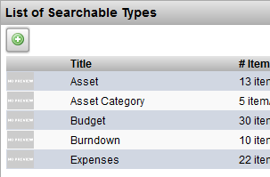
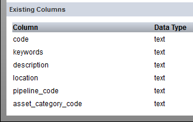
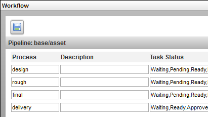

When a new project is created based on a template project, the following internal structure will be copied over:
|
search types and custom columns |
The sTypes and their custom columns are copied over from the
template.
eg. project/asset. Keep in mind that the instances of these types are not copied over ie. the items themselves are not copied over

The custom columns are copied over from the template. 
|
|
pipeline and task statuses |
The processes and the task statuses are copied over from the
template.
eg. processes: design, rought, final, delivery

|
|
notifications and triggers |
The notificaions and triggers are copied over from the template. |
| sidebar | The links of the views in the sidebar are copied over from the template. |
Note
The only difference between a project that is a template and a regular project is simply a checkmark in a column named is_template in the projects table.
To toggle the is_template attribute of a regular project, as the administrator go to:
Admin views -> Site Admin -> Projects
Add the column is_template and remove the Search Filters.
Notice that there exists the following view for convenience:
Admin views -> Site Admin -> Template Projects
Note
After a new project is created based on a template, any changes made to the template will not affect the new project.
ie. only the structure that existed in the template at the time the project was created will be used